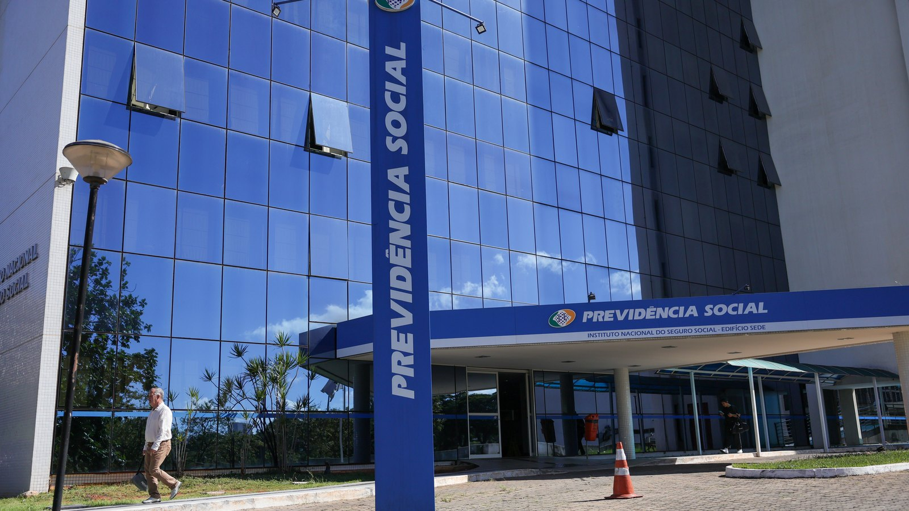

Brasil · Economia
Brasil · EconomiaGolpe que engana pela conversa já responde por 40% das fraudes financeiras no país
Por que a proibição de autorizar desconto por telefone importa tanto.
A regra vale desde o dia 19 de agosto. Quem não tem foto nas bases do governo autoriza o empréstimo pelo aplicativo, com acesso por dados bancários. O Meu INSS Vale+ segue suspenso.
Em 30 segundos · Modo de Leitura, formato original Santa Informa
Aposentado e pensionista sem biometria facial nas bases do governo voltaram a poder contratar empréstimo consignado.
A autorização é feita pelo aplicativo Meu INSS, com acesso por dados bancários.
A regra está na Instrução Normativa 213 do INSS, publicada no dia 19 de agosto de 2026, e já está em vigor.
Na portabilidade, o segurado assina um termo específico no aplicativo, e o banco que recebe tem 20 dias para confirmar. Sem confirmação, a operação é cancelada.
O desconto no benefício só acontece depois que o banco manda a documentação ao INSS.
Os bancos têm 7 dias úteis para informar os dados do depósito na conta do beneficiário.
A autorização do desconto não pode ser feita por telefone nem comprovada por gravação de voz.
O Meu INSS Vale+, antecipação de até R$ 150, continua suspenso.
EconomiaPublicada em Redação Santa Informa

Quem recebe do INSS e não tem foto cadastrada nas bases do governo federal voltou a poder pegar empréstimo consignado. A autorização passa a ser feita pelo aplicativo Meu INSS, com acesso por dados bancários. A mudança está na Instrução Normativa 213, publicada no dia 19 de agosto, e já está valendo. A informação é da Agência Brasil.
A biometria facial virou exigência em agosto do ano passado, para reforçar a segurança depois da série de escândalos no INSS. Ela continua disponível para quem tem foto na CNH ou na base da Justiça Eleitoral. A novidade é que quem não tem registro biométrico deixa de ficar impedido de contratar. O INSS diz que a instrução normativa traz outros requisitos para segurar a fraude no lugar da biometria.
A principal delas é direta: a autorização do desconto não pode ser feita por telefone nem comprovada por gravação de voz. Na portabilidade, quando a dívida muda de banco, o beneficiário precisa assinar um termo dentro do aplicativo, e o banco que recebe o contrato tem 20 dias para confirmar a operação. Passou o prazo sem confirmação, a transferência é cancelada. O desconto no benefício também só pode começar depois que a instituição manda ao INSS o contrato, a autorização e as informações de valor, parcelas e juros.
Outro ponto: o banco tem 7 dias úteis para informar ao INSS os dados do depósito do empréstimo na conta do beneficiário. Isso permite cruzar o contrato registrado no benefício com o dinheiro que de fato caiu, e ajuda a identificar operação fraudulenta. O Meu INSS Vale+, a antecipação de até R$ 150 do benefício, segue suspenso.
No litoral, aposentado e pensionista são público grande. E o consignado é dos créditos mais fáceis de contratar, porque a parcela sai direto do benefício, antes de o dinheiro chegar na conta. Também é dos mais difíceis de desfazer. A regra nova abre a porta para quem estava travado, e isso é bom para quem precisa. Mas a frase que mais vale guardar é a da proibição: ninguém do banco pode pedir autorização de desconto por telefone. Se ligarem oferecendo consignado e pedindo confirmação por voz, não é procedimento do INSS.
O resumo de 30 segundos está no topo e a versão completa é o texto acima. Aqui ficam as três leituras da casa sobre o mesmo assunto.
Clara, a otimista
Tinha gente honesta presa do lado de fora. Aposentado que nunca tirou CNH e não tem foto na Justiça Eleitoral ficava sem conseguir contratar, mesmo precisando. Agora tem caminho.
E as travas novas são boas de ler. Prazo para o banco confirmar, obrigação de informar o depósito e proibição de autorizar por telefone atacam justamente o ponto por onde o golpe entrava. Abriu a porta e trancou a janela.
Seu Prudêncio, o criterioso
Merece atenção quem é esse público. Quem não tem foto na CNH nem na Justiça Eleitoral costuma ser a pessoa mais velha, com menos intimidade com celular. E a nova regra manda essa pessoa autorizar o empréstimo dentro de um aplicativo. Existe um risco prático aqui: quem não domina o app pede ajuda, e a ajuda nem sempre vem de quem devia.
Vale acompanhar também o efeito das travas na prática. Vinte dias para confirmar portabilidade, sete dias úteis para informar o depósito e proibição de autorização por voz são medidas certeiras no papel. O que decide é a fiscalização em cima do banco que descumprir, e sobre isso a nota não fala. Uma sugestão útil para quem tem pai ou mãe recebendo do INSS: confira o extrato do benefício uma vez por mês, porque desconto irregular aparece antes no papel do que na conversa.
Dito isso, a instrução vai na direção certa. Trocar uma exigência que travava gente honesta por um conjunto de controles rastreáveis é melhor arranjo que o anterior. E cruzar contrato com depósito efetivo é o tipo de checagem que descobre fraude sem incomodar quem está regular.
Caco, o sarcástico
O INSS descobriu que dava para checar empréstimo olhando se o dinheiro entrou na conta. Revolucionário. Alguém devia ter pensado nisso antes do escândalo.
Agora ninguém pode autorizar desconto por telefone. Quem ligar dizendo que pode, já se apresentou.
E o Vale+ de R$ 150 segue suspenso. É a única coisa do INSS que continua igual desde o ano passado.
Fontes: Agência Brasil, reportagem de 23 de agosto de 2026, com a Instrução Normativa 213 publicada em 19 de agosto, a autorização pelo Meu INSS com acesso por dados bancários, o termo de portabilidade, os 20 dias para o banco confirmar, os 7 dias úteis para informar o depósito, a proibição de autorização por telefone e a suspensão do Meu INSS Vale+. Sobre golpe que começa com uma ligação, veja a matéria da engenharia social.
Brasil · EconomiaPor que a proibição de autorizar desconto por telefone importa tanto.
Quem é o público que essa mudança de regra alcança aqui.
 Brasil · Trabalho
Brasil · TrabalhoOutro dinheiro federal com prazo correndo agora.